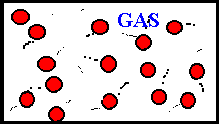
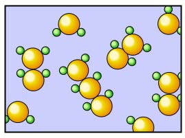
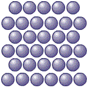

The atom was first discovered by Robert brown in 1827 but he was not taken seriously about there being a smaller particle of matter.
Then the first actual full evidence based discoverey was by Albert einstein in 1912
Albert einstein called the motion of particles the Browniar motion.
The Browniar motion - The random movement of particles as the are struck by other particles
e.g. particles dancing in a beam of light - The food aroma reaching you from the kitchen - Spreading color of potasiumn manganate (VII) in a beaker of water - Spreading of bromime particles in a cilinder of air
- Atoms - The smallest particle in Nature, Cannot be be broken down in chemical reactions e.g. G,N,C,O
- Molecules - Two or more atoms joined together e.g. O2, H2O, CL2, NFl3
- ions - Atoms that have either gained or lost electrons that have a charge e.g. Na+, Co2+, Cl-, NH4+, So4²-
| State of matter | Name |
|---|---|
| Gas | Watre vaper |
| Liquid | water |
| Solid | Ice |
Melting
evaporation
Sublimation
Condensation
Frezzing
Deposition
The phase where a liquid transtions into a solid
The phase where a solid transtions into a liquid
The phase where a gas becomes a liquid
The phase where a liquid becomes a gas
The phase where a solid directly becomes a gas
The phase where a gas directly becomes a solid
| State | Arangement of particles Structure | Structure space between particles | Arangement of particles | movement |
|---|---|---|---|---|
| gas |  | Lots of space between particles | random | Move easely |
| Liquid |  | Very little space, tightly packed | random | moving freely vibrate |
| Solid |  | No space | Not random | Only vibrate |
Presure is the amount of force inside of a container Because the amount of particles in one place is more and they would start htiing the wall of the contanier and incress presure, If more of the substance is added the presure would incress, If the contanier has a piston and if the piston is sealed on the sides the presure would incress when you push the contanier becuse the amount of particles in one place incress and they hit the wall of the contanier and the presure would incress.
When Deffusion happens the particles move arounnd in another substance and can change the colour of the substance.
e.g. When the aroma of food being cooked in the kitchen reaches you at the other side of the house.